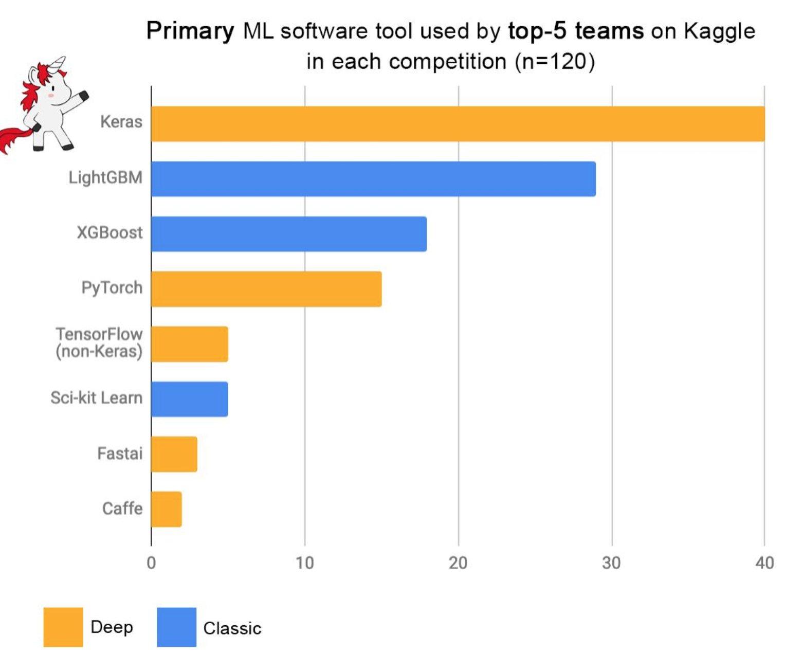
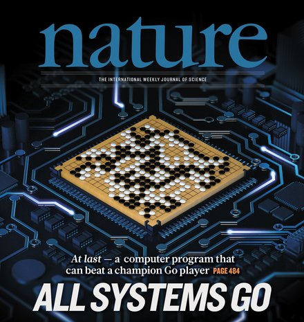

class: center, middle # Trends in Data Science and Asset Management Sylvain Champonnois (sylvain.champonnois@gmail.com) London Business School, 06/07/2019 .footer[] ??? I'm trained essentially as an economist -- I did PhD in Economics at Princeton and then was an assistant professor of Finnace at UCSD and Imperial College Business School before joining BlackRock. At Blackrock, I was in the quantitative equity group doing research. What it meant: I would given a dataset and I would craft a beautiful signal. It took me time to think like a computer scientist: - the goal is to not come with one signal, but hundreds - is what I am doing scalable? - am I building systems? am I re-using libraries? I'll try not to talk about myself, but in some sense, this talk is about my personal journey from economist to computer scientist. Or equivalently, "Data science" is what bridges understanding the world (~ economics) and using systems (~computer science) -- statistics common to both although the approach of econometrics is very different from the machine-learning one. --- # Outline 1. Trends in data science 2. What do hedge funds do? ??? --- class: center, middle # Trends --- class: center, middle # Trend 1: Sensors everywhere .footer[[Mary Meeker (2018)](http://www.kpcb.com/internet-trends)] ??? Cost of sensors coming down -- leading to sensors everywhere in the physical world. I was reading a report on construction: - McKinsey has some stats that roughly say: projects are generally 80% overbudget and take 20% more time to be completed; 20% of the budget cost is rework. - Given that construction is roughly 10% of GDP, reducing the excess spending would have an aggregate impact. How: sensors -- e.g. to check whether a task has been completed, and whether it's done correctly. It implies real-time feedback; and you can construct historical database to make predictions and evaluate performance (e.g. of contractors). Many feedback loops: if you can measure better, you can design better, etc. --- class: center, middle # Trend 1 (bis): Data deluge <img src="images/internetminute2.PNG" width="85%"> .footer[[Lori Lewis (03/05/2019)](https://www.allaccess.com/merge/archive/29580/2019-this-is-what-happens-in-an-internet-minute)] ??? ... similarly in the online world, everything can be measured... Another point on data is that it can become a moat, with positive feedback loops: proprietary data leads to better (e.g. cheaper or more precise or efficient) services, and therefore to more customers, leading to even more data. What does all this data means for investors? There is a qualitative difference between having a few dataset (or equivalently getting your information from the FT every morning), and having such an amount of data. --- class: center, middle # Trend 2: Data / machine-learning (ML) .left-column[ <img src="images/unreasonableEffectiveness.PNG" height="350"> ] .right-column[ ] .footer[[Sun, Shrivastava, Singh, Gupta (2017): Revisiting Unreasonable Effectiveness of Data in Deep Learning Era](https://arxiv.org/abs/1707.02968)] ??? "The unreasonable effectiveness of data" is a paper from 2009 out of google -- making the point that more data leads to better performance (in the context of statistical machine translation). It is hard to imagine, but 2009 was the pre-deep-learning era. Performance increases logarithmically based on volume of training data. We find there is a logarithmic relationship between performance on vision tasks and the amount of training data used for representation learning While GPU computation power and model sizes have continued to increase over the last five years, the size of the largest training dataset has surprisingly remained constant. Is there something as too much data? - Logs in computer farms - Videos from cameras (e.g. in the context of warehouse automation) --- class: center, middle # Trend 3: ML research .footer[[Jeff Dean (06/02/2019)](https://twitter.com/JeffDean/status/1135114657344237568)] ??? We can have quibbles about the reference to the Moore's law, but the point is valid: it is another avalanche, not just data, but also open-research publications -- how does one keep track? --- class: center, middle # Trend 3: ML research  .footer[[Francois Chollet (04/03/2019)](https://twitter.com/fchollet/status/1113476428249464833)] ??? We can have quibbles about the reference to the Moore's law, but the point is valid: it is another avalanche, not just data, but also open-research publications -- how does one keep track? --- class: center, middle # Trend 4: Innovation adoption .footer[[Mary Meeker (2018)](http://www.kpcb.com/internet-trends)] ??? Innovation is always scary -- this is quite normal: when we don't know much about something, it is hard, you need to understand what it means, is it for real?, etc. --- class: center, middle # Trend 4 (bis): US/China race .footer[[Mary Meeker (2018)](http://www.kpcb.com/internet-trends)] ??? There are many varying levels of adoption -- across industries, across individuals. But this is also especially true across countries -- with the US and China leading the pack. In particular, many see this as a new arm's race. --- class: center, middle # Trend 4 (bis): hope and hype .footer[[Andreas Mueller (2017)](https://www.slideshare.net/PoleSystematicParisRegion/py-paris2017-promises-and-perils-in-artificial-intelligence-by-andreas-muller)] ??? Two points from this slide: - there is a lot of hype: if you don't know much about a topic you need to avoid the "hype trap" and figure out what is for real. An advice: avoid the words "artificial intelligence", "AI", "big data"... - but there is also a lot of real work that needs to be done: if you think about "data visualisation" and "data analytics", this is so important in all the organisations, but this is also unsexy and very under-recognised. For people to get a job, they would not say "I'm a specialist in data visualisation", but I do "data science". --- # Summary 1. Data: sensors, online, etc 2. More data => better outcomes 3. Explosion in AI research 4. Varying levels of technology adoption ??? --- class: center, middle # Hedge funds ??? What do hedge funds do today? - each morning, there is a production systems that generates a spreadhsheet: each row is a firm, each column is a forecast for a certain component of returns (e.g. momentum, quality, valuation, macro, etc) - in the morning, say, 100 data feeds are updated, so that the views on the firms in the universe are changed - the portfolio is re-optimised taking into account a risk-model and a transaction cost model. - given the new views, there will be trades to re-align the actual positions with the new views. The first-order value comes from having better views -- in some sense, risk and transaction costs models yield second-order improvements (although these improvements can be massive if there are large inefficiencies) --- class: center # What do hedge funds do? HF = data + compute power + human capital + knowledge ??? Almost two Sigma's motto -- let me unpack that. --- class: center # Data Alternative data = web + credit card transactions + geolocalisation + satellite imaging .footer[[FT (08/28/2017)](https://www.ft.com/content/d86ad460-8802-11e7-bf50-e1c239b45787)] ??? Examples of alternative datasets being used by hedge funds - a lot of third-party data platforms have emerged to centralise these new datasets; I have doubts about these platforms -- another model is hedge funds doing the primary research themselves. --- class: center # Data What is driving markets? .footer[[Bloomberg (06/15/2019)](https://www.bloomberg.com/news/articles/2019-05-15/quants-think-like-amateurs-in-the-world-s-wildest-stock-market)] ??? --- # Data .left-lcr[ Pre-quant - collect data ] .center-lcr[ Quant 1.0 - trade simple signals ] .right-lcr[ Quant 2.0 - heavy machine-learning ] Examples today: .left-lcr[ - illiquid markets, PE/VC] .center-lcr[ - alternative data ] .right-lcr[ - balance-sheet, news ] ??? 1. Pre-quant: collect data no-one else has + passive tilts. 2. Quant 1.0: trade simple systematic signals as the data becomes available 3. Quant 2.0: machine-learning layer on data that has become generic Example of 1.: private equity, venture capital, exotic futures contract for CTAs (e.g. milk, electricity, etc). --- # Data Evolution of data and models .left-column[ - small data - low dimensionality - stationary - static - linear - general - law of nature ] .right-column[ - big data - high dimensionality - non-stationary - dynamic - non-linear - customised - adaptive mindset ] ??? There are no "law of nature" -- financial markets are complex system where agents compete every day and that are hit by external shocks (e.g. decisions of central banks) This is the direction of travel -- no coming back. --- # Data Scalability in data discovery and collection: - data decays as it ages - combining datasets - data cleaning is a nasty business .footer[[Mahmood Noorani (03/28/2019)](https://www.linkedin.com/pulse/observations-alternative-data-quant-analytics-finance-mahmood-noorani/)] ??? --- class: center, middle # Compute power / machine-learning Autonomous systems = waymo OR uber OR roborace? .left-lcr[ ] .center-lcr[ ] .right-lcr[ ] .footer[.tiny[[Electricautosport](https://www.electricautosport.com/2017/02/roborace-reveals-worlds-first-driverless-electric-race-car/roborace_barcelonas_media_daniel-simon_07_large/), ] .tiny[[Drivmag](https://drivemag.com/news/google-stops-making-whatever-ugly-self-driving-car-it-was-making-spins-off-waymo), ] .tiny[[Fortune](http://fortune.com/2018/03/19/uber-self-driving-car-crash/)]] ??? This is a metaphor for autonomous systems: - waymo: boringly slow, but focus on avoiding accidents - uber: more punchy, but accidents occur -- are we ready to deal with that? - roborace: super aggressive intimidation -- already exists with HFTs? --- class: center, middle # Compute power / machine-learning Generations of algorithms = lasso, trees, and neutral nets .left-lcr[ <img src="images/lasso.png" height="180"> ] .center-lcr[ ] .right-lcr[ <img src="images/tensorsflowing.gif" height="320" /> ] .footer[.tiny[[Hasite, Tibshirani and Friedman (2009)](https://web.stanford.edu/~hastie/ElemStatLearn/), ] .tiny[[Jaroslaw Szymczak (2017)](https://github.com/jarekszymczak/xgboost_pydata), ] .tiny[[TensorFlow](https://www.tensorflow.org/programmers_guide/graphs)]] ??? Three generations of algorithms: - regularisation of linear regressions -- e.g. ridge or lasso - trees -- .e.g. gradient boosted trees - neural nets -- e.g. tensorflow library --- class: center, middle # Compute power / machine-learning New machine-learning techniques .left-column[ ] .right-column[  ] ??? Two new cool methods: - on the left dogs that look like blueberry muffins (or blueberry muffins that look like dogs) - generative adversarial networks: imagine there are two neural networks -- the job of the first one is to classify dog images; and the job of the second one is to trick the dog classifier -- and it is going to show images of muffins that look a lot dogs, but aren't quite. The back-and-forth competition between the two networks improves the accuracy and speeds up the learning. - Alpha Go uses standard techniques -- e.g. reinforcement learning, Monte Carlo Tree Search and value functions, but the combination of these components is novel. In particular, you initialise the generate an initial policy; then the reinforcement learning policy gets perfected with self-play; then you generate random samples to estimtae a value function. - The critic is that AlphaGo is narrow AI, or equivalently super smart engineering -- and super impressive marketing! --- # Compute power / machine-learning Finance firms as software companies: - high performance computing / cloud - software development - A/B testing --- # Human capital .left-column[ Finance in 2000 - small teams - very competitive culture - 4/5 datasets - easy to assess performance - secretive to protect IP ] .right-column[ Finance in 2018 - very large teams - very collaborative culture - 100+ new datasets per year - hard to assess contributions - open to innovate fast ] ??? - In 2000, there are were essentially 4 datasets (prices, volume, balance-sheet information and analyst recommendations) -- you might have had many questions that you wanted to address, but only these datasets to use. And ironically, given that everybody were looking at the same data, it reinforced the competitive culture (inside small teams and across teams). And whatever edge you had, you wante do protect it. - Fast forward today: many more datasets, algorithms, infrastructure solutions, etc. -- so you need large teams with complementary skills. But larger teams are harder to manage, and a collaborative culture is necessary to get it done. --- class: center, middle # Human capital People + Machine .footer[https://chenhaot.com/pubs/mldg-interpretability.pdf] ??? Another challenge comes from using black boxes? How do we open these black boxes and try to understand what the model is trying to tell? - the machine is not operating in a vaccum but with people designing and using it. - there is a tension between econometrics (e.g. understanding whether coefficients are statistically significant in an easy to interpret regression) and machine-learning (not easy to undestand but more accurate) - the other dimension is efficiency -- for instance parsimony. --- class: center, middle # Human capital What can go wrong? Machine bias .footer[[ProPublica (05/23/2016)](https://www.propublica.org/article/machine-bias-risk-assessments-in-criminal-sentencing)] ??? Another issue related to interpretability is bias: if we are making life changing decisions for people based on these algorithms, we better make sure they are not biased. We all have our more or less conscious biases, and ideally we’d like machines to be more objective then us. But often machines learn from past decisions made by humans, and so they inherit the societal biases. - read the propublica article - the US justice system is using risk assessments generated from algorithms -- the algorithms are trained on historical data, so they reproduce the biases in the dataset -- and in fact are not that good at predicting, say, violent crime. But it had a strong racial component: black defendants are more likely to be falgged as future criminal (twice more than white defendants), white defendants are more likely to be mislabeled as low risk compared to black defendants. - many problems: proprietary algorithms (hence not available to the public or the justice system), overconfidence of the judges in these systems, no competition or possibility to challenge the assessment, etc. What do we learn from this for Finance? --- # Knowledge Defining knowledge: 1. theoretical and practical (= bags of tricks) 2. multidisciplinary / multidimensional, but also domain-specific 3. research process to push the frontier of knowledge 4. accumulation of experience documented on a common repository (e.g. academic journals or internal wiki) .footer[[http://www.arxiv-sanity.com/](http://www.arxiv-sanity.com/)] ??? One of the biggest success of machine-learning has been computer vision: - a clear objective (ImageNet competition), academia + google/... documenting publically the bags of tricks that lead to better performance. - but all these bags of tricks are very domain-specific: accumulation of knowledge needs to be done for each domain. - the idea of learning is crucial -- from others, from events, from history... Biggest mistake: "best respond to the latest event!" --- # Research pipeline .left-lcr[ Data prep - data collection, curation, processing, structuring - fast data layer available to all - feature analysis ] .center-lcr[ > Experimentation - reproducible research, - shared code ] .right-lcr[ > Production deployment - iterative process - versioning ] ??? Key word here is "science" --- # Importance of Finance Traditional building blocks: first-order or to be outsourced? - risk model - transaction cost model - backtesting framework (including optimiser) - execution algos .footer[.tiny[[The Buy-Side Trader is Latest Job to Be Outsourced as Costs Risk](https://www.bloomberg.com/news/articles/2019-06-04/the-buy-side-trader-is-latest-job-to-be-outsourced-as-costs-rise)]] --- # Research in Finance Tricks / pitfalls for time-series: - iid and resampling - stationarity and differentiation - identifying events - cross-validation - backtest overfitting .footer[.tiny[[Marcos Lopez de Prado (2017)](https://papers.ssrn.com/sol3/papers.cfm?abstract_id=3031282)]] ??? - "iid data is good": when we look at returns: at the second/minute/hour, there is a very strong autocorrelated component, and at the month/year/decade, returns are idependant -- what is the right sampling frequency? or equivalently what is the right amount of smoothing? - "stationary data is good": often what matters is not the level of a variable, but it's rate of growth, so you do "year-on-year" or "month-on-month" differences, and by doing so, you remove a bit of "history" -- when is it ok to remove a bit of information from the past? Technical term: time-series scoring. - "events are ticky": earthquake in Siberia versus butterfly flap -- how do we identify events, how to build a database of events? what events matters? do certain events repeat themselves -- or are some of these events unique? Type I versus type II errors. - "cross-validation is good": cv in time-series is hard, but probably necessary -- especially in non-iid and non-stationary data. - "overfitting is bad": how not to over-learn from the past? important to make sure there is no forward-looking bias. --- # Summary 1. Embracing data and machine-learning is a process 2. Automation is having a first-order impact 3. "Artificial intelligence: a deeply human pursuit" 4. No subsitute for doing domain-specific primary research .footer[[Fei-Fei Li (2018)](https://www.youtube.com/watch?v=ZS0WPF1VGEE)] ??? --- class: center, middle # Conclusion: the Future .left-column[ ] .right-column[ ] --- # Navigating innovation and disruption Ito and Howe (2016): Whiplash .left-column[ 1. Emergence / Authority 2. Pull / Push 3. Compass / Maps 4. Risk / Safety 5. Disobedience / Compliance ] .right-column[ <ol start="6"> <li>Practice / Theory</li> <li>Diversity / Ability</li> <li>Resilience / Strength</li> <li>Systems / Objects</li> <li>Learning / Education</li> </ol> ] ??? - emergent systems - pull draws resources from participant network -- rather than stock-piling materials and information - risk ~= value investing; demo, die or deploy - disobedience = approach to learning -- with probing and questioning. "You don't win a Nobel prize by doing as you're told" - practice = "failing fast". In a faster future, there is often a higher cost to waiting and planning than to there is to doing and improving. - diversity: crowdsourcing - organisation resilient enoght to sucessfully recover from failures, also benefit from an immune system effect (defense versus offense) - systems: constant focus on the overall impact of tech -- and an understanding of the connections between people, their communitiies and their environment. A map implies that there is an optimum path, that everything has been explored. But the world today is unpredictable! There might be corners where it is a decent strategy to mine an old strategy. But also there are so many opportunity out there that it is very exciting to be an explorer. Only you need a direction!